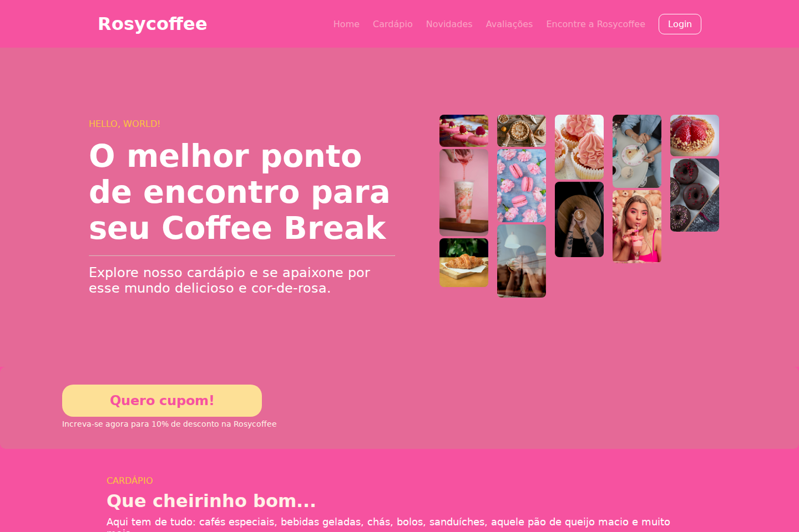

Website · Cafeteria
Rosycoffee
Uma landing page que apresenta o cardápio e a atmosfera de uma cafeteria.

O projeto
A Rosycoffee apresenta uma cafeteria e seus produtos em uma landing page de identidade marcante. O objetivo é aproximar visitantes da marca e oferecer um primeiro contato com o cardápio e o ambiente.
Proposta e estrutura
O site organiza a apresentação da cafeteria, cardápio, novidades, avaliações e localização. O repositório também contém páginas de cadastro e confirmação.
Minha participação
A descrição da minha contribuição está em revisão.
Falta confirmar quais partes do layout, da implementação e das interações foram desenvolvidas por mim.
Tecnologias do projeto
Ferramentas identificadas no código e na documentação do repositório.
Registros visuais
Página inicial executada localmente a partir do código do repositório.

Explore o código
Estrutura, arquivos e documentação do projeto no GitHub.
Rosycoffee ↗